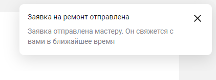
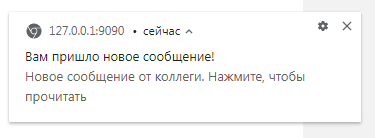
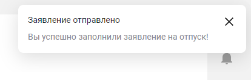
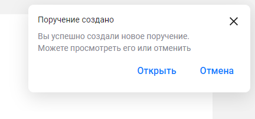
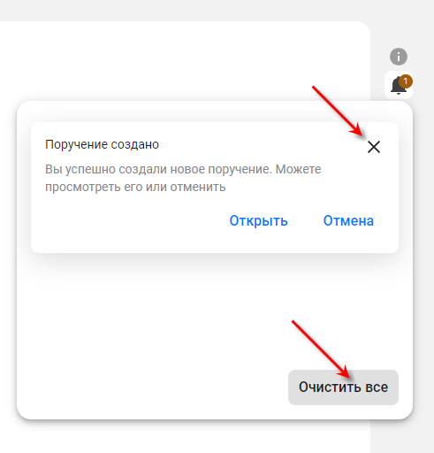
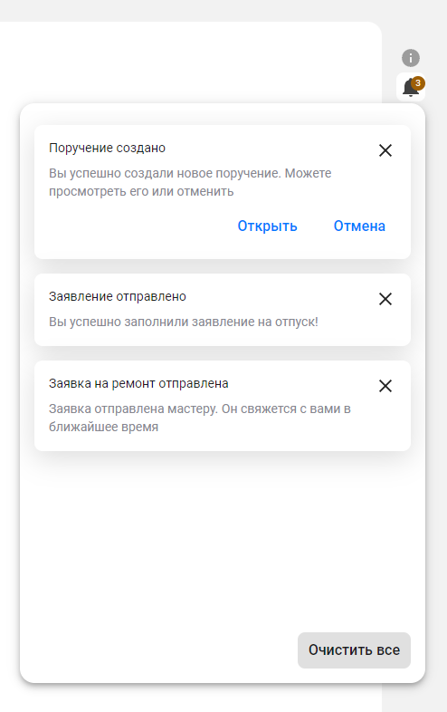

Уведомления
Уведомления - это системный механизм, позволяющий оповестить пользователя о том или ином событии. Он доступен только на клиенте.

Вместе с центром уведомлений, который можно открыть нажатием на колокольчик в интерфейсе приложения, уведомления позволяют приложению взаимодействовать с пользователем. Они могут использоваться, например, чтобы:
- Оповестить о новом письме, пришедшем на почту;
- Уведомить о том, что совещание скоро начнется;
- Подтвердить, что заявка на отпуск/больничный была успешно создана и отправлена;
- Вывести информацию о том, что новый товар был успешно добавлен в покупательскую корзину.
Самое простое уведомление можно создать и показать следующим образом:
пер Уведомление = новый Уведомление("Заявка на ремонт отправлена", "Заявка отправлена мастеру. Он свяжется с вами в ближайшее время")
МенеджерУведомлений.Показать(Уведомление) - Оповещение о неожиданном событии;
- Подтверждение совершенного действия.
Оповещение о неожиданном событии
Оповещение о неожиданном событии это, например, новое письмо в почте. Пользователь не ожидает этого оповещения, он не знает, когда придет письмо. Такие оповещения пользователь хотел бы увидеть даже если у него не открыта вкладка с приложением или тогда, когда он работает в другой программе при наличии свернутого окна браузера. Поэтому такие оповещения «1С:Кабинет сотрудника» показывает в виде нативных уведомлений браузера. Они будут видны пользователю в случае, если браузер запущен и открыта хотя бы одна вкладка с приложением.

пер Уведомление = новый Уведомление("Вам пришло новое сообщение!", "Новое сообщение от коллеги. Нажмите, чтобы прочитать")
Уведомление.Важность = ВажностьКлиентскогоУведомления.ВысокаяПодтверждение совершенного действия
Оповещения, подтверждающие действия пользователя, нужно показать, как правило, сразу после совершения действия. Когда такие уведомления приходят, пользователь работает с приложением в одной из вкладок. Поэтому такие оповещения «1С:Кабинет сотрудника» показывает в виде уведомлений приложения. Они отображаются только в активной вкладке браузера и имеют больше настроек, по сравнению с уведомлениями браузера.

Это стандартный способ показа оповещений, он соответствует обычной важности — ВажностьКлиентскогоУведомления.Обычная;
Кнопки в уведомлении
По-умолчанию уведомления не содержат кнопок, но вы можете их добавить. Например, возможен такой сценарий работы. Менеджер создал новое поручение сотруднику, менеджеру сразу же пришло уведомление о том, что поручение было создано.

Далее менеджер может открыть форму с поручением, нажав на кнопку Открыть, либо отменить поручение, нажав на кнопку Отмена. Кроме этого менеджер всегда может закрыть уведомление нажатием на крестик, в таком случае ничего не произойдет.
Для добавления кнопок используйте тип ОписаниеКнопки и свойство уведомления ОписаниеКнопок. Оно содержит массив описаний кнопок:
пер Уведомление = новый Уведомление("Поручение создано", "Вы успешно создали новое поручение. Можете просмотреть его или отменить")
пер КнопкаОткрыть = новый ОписаниеКнопки("Открыть")
КнопкаОткрыть.ПриНажатии = &ОткрытьПоручениеИзУведомления
пер КнопкаОтмена = новый ОписаниеКнопки("Отмена")
КнопкаОтмена.ПриНажатии = &ОтменаИзУведомления
Уведомление.ОписаниеКнопок.Добавить(КнопкаОткрыть)
Уведомление.ОписаниеКнопок.Добавить(КнопкаОтмена)
МенеджерУведомлений.Показать(Уведомление)Обработчики событий кнопок ПриНажатии могут выглядеть следующим образом:
метод ОткрытьПоручениеИзУведомления(Уведомление: Уведомление)
...
;
метод ОтменаИзУведомления(Уведомление: Уведомление)
...
;Если уведомление показывается с высокой важностью (в нативном уведомлении браузера), то в этом случае оно не отображает кнопки, нажать можно только на само уведомление и в этом случае будет выполнен обработчик нажатия первой кнопки. Остальные кнопки будут проигнорированы.
Обработка закрытия уведомления
С помощью свойства ПриЗакрытии вы можете назначить обработчик, который будет выполнен при закрытии уведомления.
метод КнопкиУведомлений()
пер Уведомление = новый Уведомление("Поручение создано", "Вы успешно создали новое поручение. Можете просмотреть его или отменить")
Уведомление.СохранитьВЦентреУведомлений = Истина
Уведомление.ПриЗакрытии = &ПриЗакрытииУведомления
МенеджерУведомлений.Показать(Уведомление)
;
метод ПриЗакрытииУведомления(Уведомление: Уведомление)
...
;- Уведомление находится в центре уведомлений и пользователь нажал кнопку Очистить все;
- Пользователь нажал на крестик в компоненте уведомления в центре уведомлений.

Центр уведомлений
Центр уведомлений это всплывающее окно, в котором сохраняются уведомления с флагом СохранитьВЦентреУведомлений равным Истина (по умолчанию он равен Ложь и уведомления не сохраняются в центре уведомлений).

Открыть центр уведомлений можно нажав на колокольчик в интерфейсе приложения. Уведомления, сохраняющиеся в центре уведомлений, появляются здесь одновременно с появлением всплывающего окна с уведомлением.